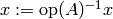

Level 2¶
The prototypes for the following routines can be found at include/elemental/blas-like.hpp, while the implementations are in include/elemental/blas-like/level2/.
Gemv¶
General matrix-vector multiply:
 ,
where
,
where  can be
can be  ,
,  , or
, or  .
Whether or not
.
Whether or not  and
and  are stored as row vectors, they will
be interpreted as column vectors.
are stored as row vectors, they will
be interpreted as column vectors.
- void Gemv(Orientation orientation, T alpha, const Matrix<T>& A, const Matrix<T>& x, T beta, Matrix<T>& y)¶
Serial implementation (templated over the datatype).
- void Gemv(Orientation orientation, T alpha, const DistMatrix<T>& A, const DistMatrix<T>& x, T beta, DistMatrix<T>& y)¶
Distributed implementation (templated over the datatype).
Ger¶
General rank-one update:  . and
are free to be stored as either row or column vectors, but they will be
interpreted as column vectors.
. and
are free to be stored as either row or column vectors, but they will be
interpreted as column vectors.
- void Ger(T alpha, const Matrix<T>& x, const Matrix<T>& y, Matrix<T>& A)¶
The serial implementation (templated over the datatype).
- void Ger(T alpha, const DistMatrix<T>& x, const DistMatrix<T>& y, DistMatrix<T>& A)¶
The distributed implementation (templated over the datatype).
Gerc¶
This is the same as Ger, but the name is provided because it exists in the BLAS.
- void Gerc(T alpha, const Matrix<T>& x, const Matrix<T>& y, Matrix<T>& A)¶
The serial implementation (templated over the datatype).
- void Gerc(T alpha, const DistMatrix<T>& x, const DistMatrix<T>& y, DistMatrix<T>& A)¶
The distributed implementation (templated over the datatype).
Geru¶
General rank-one update (unconjugated):  . and
are free to be stored as either row or column vectors, but they will be
interpreted as column vectors.
. and
are free to be stored as either row or column vectors, but they will be
interpreted as column vectors.
- void Geru(T alpha, const Matrix<T>& x, const Matrix<T>& y, Matrix<T>& A)¶
The serial implementation (templated over the datatype).
- void Geru(T alpha, const DistMatrix<T>& x, const DistMatrix<T>& y, DistMatrix<T>& A)¶
The distributed implementation (templated over the datatype).
Hemv¶
Hermitian matrix-vector multiply:  , where
is Hermitian.
, where
is Hermitian.
- void Hemv(UpperOrLower uplo, T alpha, const Matrix<T>& A, const Matrix<T>& x, T beta, Matrix<T>& y)¶
The serial implementation (templated over the datatype).
- void Hemv(UpperOrLower uplo, T alpha, const DistMatrix<T>& A, const DistMatrix<T>& x, T beta, DistMatrix<T>& y)¶
The distributed implementation (templated over the datatype).
Please see SetLocalHemvBlocksize<T>( int blocksize ) and int LocalHemvBlocksize<T>() in the Tuning parameters section for information on tuning the distributed Hemv.
Her¶
Hermitian rank-one update: implicitly performs  ,
where only the triangle of specified by uplo is updated.
,
where only the triangle of specified by uplo is updated.
- void Her(UpperOrLower uplo, T alpha, const Matrix<T>& x, Matrix<T>& A)¶
The serial implementation (templated over the datatype).
- void Her(UpperOrLower uplo, T alpha, const DistMatrix<T>& x, DistMatrix<T>& A)¶
The distributed implementation (templated over the datatype).
Her2¶
Hermitian rank-two update: implicitly performs
 ,
where only the triangle of specified by uplo is updated.
,
where only the triangle of specified by uplo is updated.
- void Her2(UpperOrLower uplo, T alpha, const Matrix<T>& x, const Matrix<T>& y, Matrix<T>& A)¶
The serial implementation (templated over the datatype).
- void Her2(UpperOrLower uplo, T alpha, const DistMatrix<T>& x, const DistMatrix<T>& y, DistMatrix<T>& A)¶
The distributed implementation (templated over the datatype).
Symv¶
Symmetric matrix-vector multiply: , where
is symmetric.
- void Symv(UpperOrLower uplo, T alpha, const Matrix<T>& A, const Matrix<T>& x, T beta, Matrix<T>& y)¶
The serial implementation (templated over the datatype).
- void Symv(UpperOrLower uplo, T alpha, const DistMatrix<T>& A, const DistMatrix<T>& x, T beta, DistMatrix<T>& y)¶
The distributed implementation (templated over the datatype).
Please see SetLocalSymvBlocksize<T>( int blocksize ) and int LocalSymvBlocksize<T>() in the Tuning parameters section for information on tuning the distributed Symv.
Syr¶
Symmetric rank-one update: implicitly performs  ,
where only the triangle of specified by uplo is updated.
,
where only the triangle of specified by uplo is updated.
- void Syr(UpperOrLower uplo, T alpha, const Matrix<T>& x, Matrix<T>& A)¶
The serial implementation (templated over the datatype).
- void Syr(UpperOrLower uplo, T alpha, const DistMatrix<T>& x, DistMatrix<T>& A)¶
The distributed implementation (templated over the datatype).
Syr2¶
Symmetric rank-two update: implicitly performs
 ,
where only the triangle of specified by uplo is updated.
,
where only the triangle of specified by uplo is updated.
- void Syr2(UpperOrLower uplo, T alpha, const Matrix<T>& x, const Matrix<T>& y, Matrix<T>& A)¶
The serial implementation (templated over the datatype).
- void Syr2(UpperOrLower uplo, T alpha, const DistMatrix<T>& x, const DistMatrix<T>& y, DistMatrix<T>& A)¶
The distributed implementation (templated over the datatype).
Trmv¶
Not yet written. Please call Trmm.
Trsv¶
Triangular solve with a vector: computes
, where is either
, , or , and is treated an either a
lower or upper triangular matrix, depending upon uplo. can also be
treated as implicitly having a unit-diagonal if diag is set to UNIT.
- void Trsv(UpperOrLower uplo, Orientation orientation, UnitOrNonUnit diag, const Matrix<F>& A, Matrix<F>& x)¶
The serial implementation (templated over the datatype).
- void Trsv(UpperOrLower uplo, Orientation orientation, UnitOrNonUnit diag, const DistMatrix<F>& A, DistMatrix<F>& x)¶
The distributed implementation (templated over the datatype).